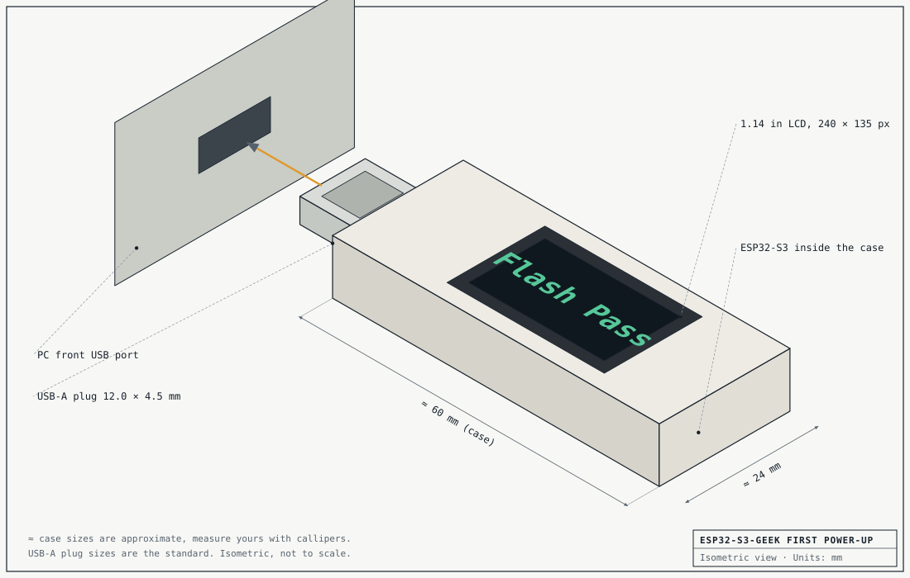
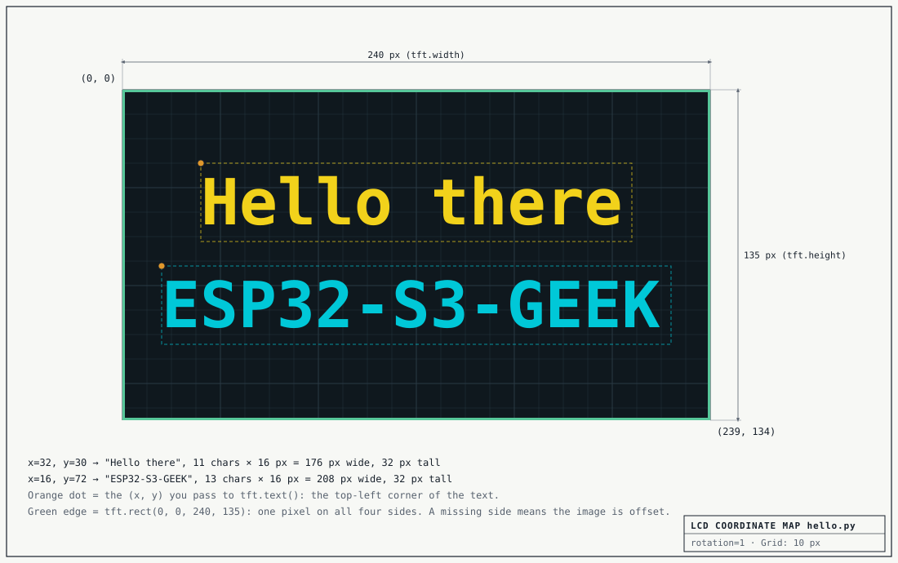
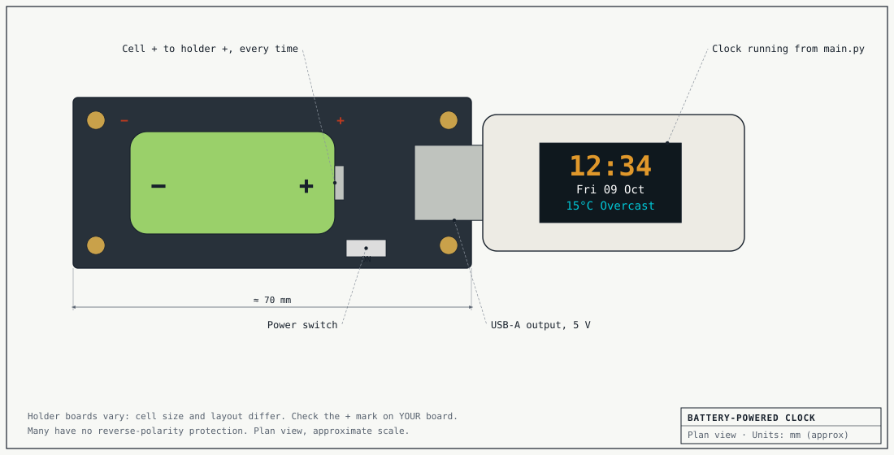

Before you start
What you need
- A Waveshare ESP32-S3-GEEK. It looks like a USB memory stick, but inside is an ESP32-S3 microcontroller with Wi-Fi and a 1.14 inch colour screen. Other ESP32 boards with the same kind of screen will work with different pin numbers.
- A computer running Linux with a spare USB port. I used my Ubuntu desktop, and every command here is for Linux. Meet the terminal covers the basics if the terminal is new to you.
- A 2.4GHz Wi-Fi network and its password. The ESP32 can't see 5GHz networks. Most home routers offer both.
- For the last step only: any USB power source, such as a phone charger or a power bank.
A microcontroller is a computer with almost everything taken away. It has no desktop, no files to browse and no operating system. It runs one program, starting the moment it gets power. That makes it cheap, small, and very good at doing one job for years.
All the code for this guide is in my geek repository, so nothing here needs typing out in full.
Step 1
Plug it in and ask the computer what it sees
Plug the stick into a USB port. Mine lit up with two words: Flash Pass. That's the maker's test program, left on at the factory, and it tells you the board and screen survived the post.

Now find out what your computer thinks has been plugged in. Open a terminal and list the USB devices:
$ lsusb
You'll get a list of several devices. Which one is the stick? Don't guess from the names. Unplug it, run lsusb again, and see which line has gone. Then plug it back in.
What I got
Bus 001 Device 007: ID 303a:1001 Espressif USB JTAG/serial debug unit
Espressif make the ESP32 chip. The two numbers after ID are the maker and the product, and every USB device has a pair. Unplugging something and looking for the missing line works for any mystery device, not just this one.
Linux gives the stick a serial port, a simple two-way text connection, and shows it as a file. Find its name:
$ ls /dev/ttyACM*
/dev/ttyACM0
Everything you send to the stick from now on goes through /dev/ttyACM0. If yours has a different number on the end, use that wherever this guide says ttyACM0.
You can point to the stick's line in lsusb, and you know the name of its serial port.
Step 2
Get the tools, and permission to use the port
Two small programs do all the work. esptool writes new software onto the chip. mpremote talks to Python once it's running there. Make a folder for the project and install both into a virtual environment, so they stay separate from the rest of your system:
$ mkdir ~/geek && cd ~/geek $ python3 -m venv venv $ source venv/bin/activate $ pip install --upgrade pip $ pip install esptool mpremote
Your prompt now starts with (venv). If you close the terminal and come back later, run cd ~/geek and the source line again before anything else.
The label on the stick says it has 16MB of flash memory. Ask the chip itself:
$ esptool --port /dev/ttyACM0 flash-id
On a fresh Ubuntu install this fails. Read what it says before scrolling on:
A fatal error occurred: Could not open /dev/ttyACM0, the port is busy or doesn't exist.
([Errno 13] could not open port /dev/ttyACM0: [Errno 13] Permission denied: '/dev/ttyACM0')
Hint: Try to add user into dialout or uucp group.
The port exists, because you listed it in step 1. So the real problem is the second line. These two commands show who is allowed to use the port, and which groups you belong to. Is your name on the list?
$ ls -l /dev/ttyACM0 $ groups
What they show, and the fix
The first command prints something like this:
crw-rw---- 1 root dialout 166, 0 Oct 9 10:46 /dev/ttyACM0
The port belongs to the user root and the group dialout. Both can read and write it, and nobody else can do anything. Your groups list doesn't include dialout, so you're "nobody else". The name comes from dial-up modems, which used the same kind of port.
Add yourself to the group, then start a shell that knows about it:
$ sudo usermod -aG dialout $USER $ newgrp dialout $ cd ~/geek && source venv/bin/activate
newgrp only fixes the terminal you're in. Log out and back in when it suits you, and every terminal will have it.
If python3 -m venv itself failed earlier, install the missing piece with sudo apt install python3-venv and run it again.
Run the flash-id command again. This time esptool connects, names the chip as an ESP32-S3, and prints a line starting Detected flash size.
flash-id runs without an error, and the flash size it reports matches the label on your stick.
Step 3
Swap the factory program for Python
The program stored on a microcontroller is called its firmware. Right now that's the factory test. You're going to replace it with MicroPython, a small version of Python built to run on chips like this one.
Download the firmware for a generic ESP32-S3. This is the version I used. The MicroPython download page will have a newer one, and its file name goes in place of mine below.
$ wget https://micropython.org/resources/firmware/ESP32_GENERIC_S3-20260824-v1.29.0.bin
Wipe the chip, then write the new firmware. The wipe took about 40 seconds on mine and the write about 8.
$ esptool --port /dev/ttyACM0 erase-flash $ esptool --port /dev/ttyACM0 --baud 460800 write-flash 0 ESP32_GENERIC_S3-20260824-v1.29.0.bin
The line to look for at the end is Hash of data verified. That's esptool reading back what it wrote and confirming it matches.
The 0 in that command is where in the chip's memory the firmware starts. Guides for the older, original ESP32 tell you to use 0x1000 instead. Why would two chips from the same family want different numbers, and what happens if you use the wrong one?
One answer
When a chip powers up, a tiny program built into it looks at one fixed address for something to run. Where it looks was decided when the chip was designed: the original ESP32 looks at 0x1000, and the S3 looks at 0. Write the firmware anywhere else and the chip finds nothing there and never starts. You haven't broken anything, because you can always erase and write again, but it's a confusing ten minutes.
So a command copied from a guide for a different chip can be wrong even when it runs without errors. The download page for your exact chip is the place to check.
Unplug the stick and plug it back in. The screen stays dark. That's correct: MicroPython is running, but nothing has told it there's a screen. Talk to it:
$ mpremote >>> print(2 + 2) 4 >>> import sys >>> sys.platform 'esp32'
That >>> prompt is Python running on the stick, not on your computer. Each line you type travels down the USB cable, runs on the chip, and the answer comes back. Leave with Ctrl + X.
esptool couldn't connect
Unplug the stick, hold down its BOOT button, plug it in while still holding, then let go. That forces the chip to wait for new firmware. Run the erase again. After the write has finished, unplug and replug without touching the button.
You typed a sum at the >>> prompt and the stick answered it.
Step 4
First light on the screen
The screen has its own small controller chip, an ST7789. The ESP32 talks to it over six connections. On a breadboard you'd be pushing in six jumper wires. Here they're tracks inside the stick, already joined up, so all you need is to know which pin does what:
This way of talking, with a clock wire and a data wire, is called SPI. You'll meet it on most small screens and memory cards.
Knowing every instruction the ST7789 understands is a big job that someone has already done. Download Russ Hughes's driver and one of his fonts, then copy both onto the stick. In mpremote, a colon on its own means "the stick".
$ wget https://raw.githubusercontent.com/russhughes/st7789py_mpy/master/lib/st7789py.py $ wget https://raw.githubusercontent.com/russhughes/st7789py_mpy/master/romfonts/vga2_bold_16x32.py $ mpremote cp st7789py.py vga2_bold_16x32.py : $ mpremote ls
Now make hello.py with nano hello.py, type this in, and save with Ctrl + O, Enter, then Ctrl + X:
from machine import Pin, SPI import st7789py as st7789 import vga2_bold_16x32 as font spi = SPI(1, baudrate=40_000_000, sck=Pin(12), mosi=Pin(11), miso=None) tft = st7789.ST7789( spi, 135, 240, reset=Pin(9, Pin.OUT), cs=Pin(10, Pin.OUT), dc=Pin(8, Pin.OUT), backlight=Pin(7, Pin.OUT), rotation=1, # 1 = on its side, 240 wide and 135 tall ) tft.fill(st7789.BLACK) tft.rect(0, 0, tft.width, tft.height, st7789.GREEN) tft.text(font, "Hello there", 32, 30, st7789.YELLOW, st7789.BLACK) tft.text(font, "ESP32-S3-GEEK", 16, 72, st7789.CYAN, st7789.BLACK) print("Screen is", tft.width, "x", tft.height)
$ mpremote run hello.py
Screen is 240 x 135

Why draw a rectangle round the outside edge of the screen at all? What would it tell you if the left side of that rectangle were missing?
One answer
The ST7789 chip is built to drive screens up to 240 by 320 pixels. This glass is only 135 by 240, so it shows a window in the middle of the chip's memory, and the driver has to know how far in that window starts. If it has the number wrong, your whole picture slides sideways and one edge of the border falls off the glass.
A border on all four sides proves the driver and the screen agree. It's the cheapest test there is, and it's worth drawing before anything else on any new screen.
Make it yours
Change the file, run it again, and see what happens. Try each of these before opening the answers:
- Turn the picture upside down, as if the stick were plugged into the other side of a laptop.
- Each letter in this font is 16 pixels wide. Work out the longest line of text the screen can hold, then test one letter more.
- Make the top line orange. Colours are built with
st7789.color565(red, green, blue), each from 0 to 255.
Answers
1. Change rotation=1 to rotation=3. Values 0 and 2 stand the picture on end.
2. 240 ÷ 16 = 15 letters, starting from x = 0. The sixteenth doesn't wrap to the next line or raise an error. The driver quietly leaves it out. Remember that when a message is shorter on the screen than in your code.
3. Replace st7789.YELLOW with something like st7789.color565(255, 140, 0): all the red, about half the green, no blue.
The screen stays dark
Check that mpremote ls lists both st7789py.py and vga2_bold_16x32.py. If the terminal shows ImportError, one of them isn't on the stick or its name is mistyped in your file. If the colours are swapped, with the yellow line showing as light blue, add color_order=st7789.RGB inside the ST7789(...) brackets.
The border shows on all four sides, and you've made at least two of the three changes work yourself.
Step 5
Seven bars make every digit
The biggest letters that font can draw are 32 pixels tall, and a clock wants digits you can read from across the room. So the clock draws its own, the way a bedside alarm clock does: seven bars, each one either lit or dark. The bars are lettered a to g.
Before touching the panel: which bars does a 4 need? Write the letters down, then tap the bars to build it. The panel tells you what you've made.
Nothing lit
In the clock's code, that whole idea is one small table. Position 0 holds the bars for a 0, position 1 the bars for a 1, and so on:
SEGMENTS = (
"abcdef", # 0
"bc", # 1
"abdeg", # 2
"abcdg", # 3
"bcfg", # 4
"acdfg", # 5
"acdefg", # 6
"abc", # 7
"abcdefg", # 8
"abcdfg", # 9
)
Each bar is one filled rectangle, drawn with the same fill_rect the driver used for your border.
When the last digit changes from 7 to 8, how many bars have to change? And from 8 to 9? The clock only repaints the bars that are different. Why would it bother, when painting the whole digit again is simpler to write?
One answer
7 to 8 lights four more bars: d, e, f and g. 8 to 9 turns off just one, e.
Every pixel has to be sent down that one data wire, and the program doing the sending is Python on a small chip, so drawing is slow enough to see. Repaint all four digits every second and the display flickers. Repaint one bar and nobody notices it happened. Doing less work is usually the first thing to try when something on a small computer looks rough.
You built a 4 from memory, and you can say how many bars change between 7 and 8.
Step 6
The clock: borrowed time and borrowed weather
The stick has no battery-backed clock and no thermometer. Everything it shows comes from asking someone else over Wi-Fi. Download the clock program and the settings template from my repository:
$ wget https://raw.githubusercontent.com/ihoggan/geek/main/clock.py $ wget https://raw.githubusercontent.com/ihoggan/geek/main/secrets.example.py
Your settings stay in their own file
$ cp secrets.example.py secrets.py $ nano secrets.py
Put in your Wi-Fi name and password, keeping the quote marks, and your latitude and longitude. Search for your town's name with the words "latitude longitude" to find them. Two decimal places is plenty: that's within about a kilometre, and the weather doesn't change much across a kilometre.
The Wi-Fi password lives in secrets.py and nowhere else, so you can show anyone clock.py, or publish it, without handing over your network. If you keep this project in git, add secrets.py to .gitignore before your first commit. Once a password has been pushed to GitHub, it stays in the history even after you delete the file.
Copy your settings to the stick and run the clock:
$ mpremote cp secrets.py : $ mpremote run clock.py weather: 15 C, code 3
The screen says Joining Wi-Fi, then Setting clock, then this. Stop it with Ctrl + C when you've had a look.
Drawn by your browser from your computer's clock, using the same table of bars and the same sizes as the stick. The weather line is a sample.
Where the time comes from
The stick asks an internet time server, using a method called NTP, and sets its own clock from the answer. Time servers only speak UTC, which is the time in Greenwich in winter, and they know nothing about where you are.
It's three in the afternoon in Britain, in July. What does a clock set straight from a time server show? Think of two different ways you could fix it, and what could go wrong with each.
One answer
It shows 14:00, an hour slow, because Britain is an hour ahead of UTC in summer.
You could add an hour in the code. That's right until the clocks go back in October, and wrong for anyone outside Britain. You could teach the stick the rules: last Sunday in March, last Sunday in October. That works until you move, or the rules change, and other countries have different ones.
Or you could ask someone who already knows. The weather request in clock.py includes timezone=auto, and the reply comes back with the right number of seconds to add for your location, today. The stick never needs to know what a time zone is. When a rule is complicated and belongs to someone else, let them keep it.
Where the weather comes from
The weather comes from Open-Meteo, a free service that needs no account. The stick fetches a web address and reads the reply. Your browser can fetch the same address, so you can see exactly what the stick sees.
Open this in a new tab. It's the weather for London. Find the temperature, the weather_code, and the utc_offset_seconds from the last question. Then change the latitude and longitude in the address to yours.
What you're looking at
That text is JSON, the usual way for programs to pass data to each other. It's a set of names with a value after each. clock.py picks out three of them and ignores the rest.
The weather_code is a number from an international list: 0 is a clear sky, 3 is overcast, 61 is light rain, 95 is a thunderstorm. The function describe() in clock.py turns the number into a word that fits on the screen. You worked out in step 4 why "Partly cloudy" had to become "Pt cloudy".
It doesn't get as far as the clock
Wi-Fi failed on the screen: check the name and password in secrets.py letter by letter, including capitals, and that the network is a 2.4GHz one. After any change, copy the file to the stick again with mpremote cp secrets.py :.
No weather yet on the bottom line: the clock tries again every minute. The terminal prints the reason for each failure, and that message is the thing to search for.
The stick shows the right time for where you are, and you've seen the same weather numbers in your browser that the stick shows on its screen.
Step 7
Make it stay, then cut the cord
The clock is running from mpremote run clock.py. Unplug the stick from your computer and plug it into a phone charger. What will the screen show?
What happens
Nothing. The screen stays dark. run sent the program down the cable into the stick's working memory, and that memory is wiped when the power goes. The driver, the font and your settings survived, because cp stored those on the stick's flash memory, but the clock itself was never saved.
When MicroPython starts, it looks for a file called main.py and runs it. So to install your clock, copy it to the stick under that name:
$ mpremote cp clock.py :main.py
Now it starts by itself on any USB power: a charger, a power bank, the back of a television. To change it later, plug it back into your computer, edit clock.py, and copy it across again. If you ever want the stick quiet, mpremote rm :main.py removes it.

A phone power bank is the safe, easy choice. If you use a holder board that takes loose lithium cells, as I did, match the + on the cell to the + in the holder every time. Many of these boards have no protection against a cell put in backwards, and it can overheat within seconds. Charge loose cells where you can see them, not overnight.
My cells are a size called 16340: 16 mm across and 34 mm long. The label says 2800mAh. The much bigger 18650 cell, 18 mm by 65 mm, is the kind found in laptop batteries, and the very best of those hold about 3500mAh. Both are the same chemistry. Is the label on mine believable?
Work it through
A cell's capacity depends on how much material is inside it, so compare volumes. A cylinder's volume is π × radius² × length. The 16340 comes to about 6,800 cubic millimetres and the 18650 to about 16,500. The small cell has roughly 40% of the room.
40% of 3500mAh is about 1400mAh, and that's for a cell as good as the best big one. Honest 16340 cells are usually sold as 600 to 850mAh. So 2800 can't be true: it would mean packing twice as much energy into the same space as the best cells made. It's a common trick on cheap cells, and a volume sum catches it every time.
How long will it run?
Estimate first, then measure. A 700mAh cell at 3.7 volts stores about 2.6 watt-hours. The battery board loses some of that raising the voltage to 5 volts for USB. If the stick uses around half a watt with its backlight and Wi-Fi on, which is my guess and not a measurement, that's four or five hours.
Then put a full cell in, note the time, and see when the screen goes dark. If your answer is far from your estimate, one of the numbers you started with was wrong, and finding out which one is the interesting part.
Make it yours
Open clock.py and read it. It's about 300 lines and the settings are near the top. Some things to try, easiest first:
- Change the colour of the digits. Look for
AMBER. - Fetch the weather every 5 minutes instead of every 15.
- Show a 12-hour clock.
- Make it last longer on a battery. What is using power when nothing on the screen is changing?
Hints, not answers
1. AMBER is built with color565, like your orange in step 4.
2. WEATHER_EVERY_S is in seconds. Be reasonable with it: the service is free because people don't hammer it.
3. Find where the hour is split into two digits, in main(). The % operator gives a remainder. Midnight and noon are the two cases to test.
4. Two things run all the time: the backlight and the Wi-Fi radio. The weather only needs Wi-Fi for a few seconds every quarter of an hour.
The clock starts by itself on a power source that isn't your computer.
That's it
What I'd want you to take away
Read the error first
"Permission denied" and a hint about a group was the whole answer. Two commands showed why. Most error messages are more helpful than they look at first glance.
Borrow what's hard
Someone else wrote the screen driver, keeps the time, and knows the time zone rules. Your 300 lines only join them together, and that's what most real programs do.
A label is a claim
You asked the chip for its memory size instead of trusting the sticker, and a sum showed the battery's label couldn't be true. Check the number when you can.
The finished code is in the geek repository. Found a mistake, or a step that didn't work on your stick? Tell me. If a step here was unclear, that's my fault, and I'll fix it.